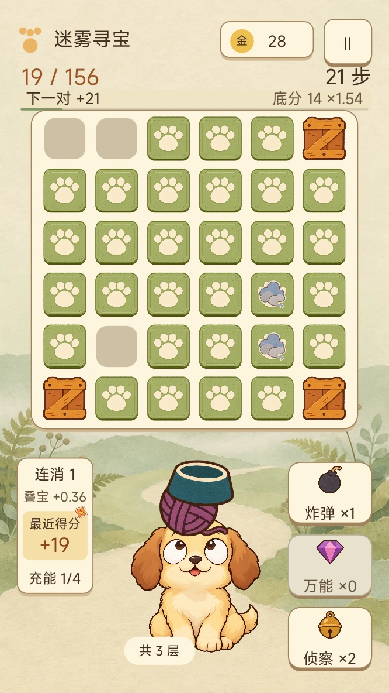
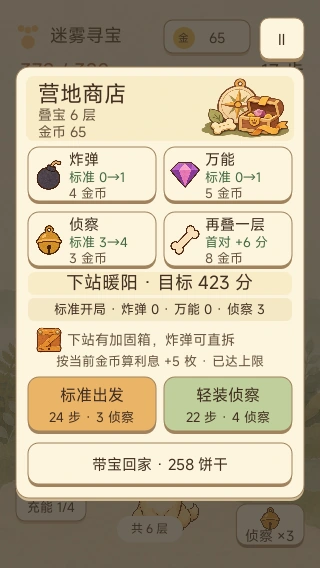
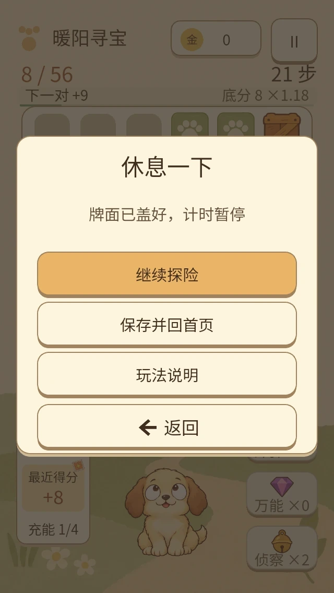
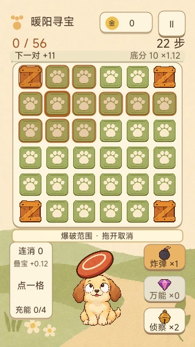
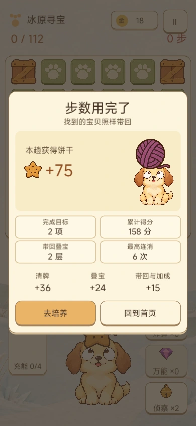
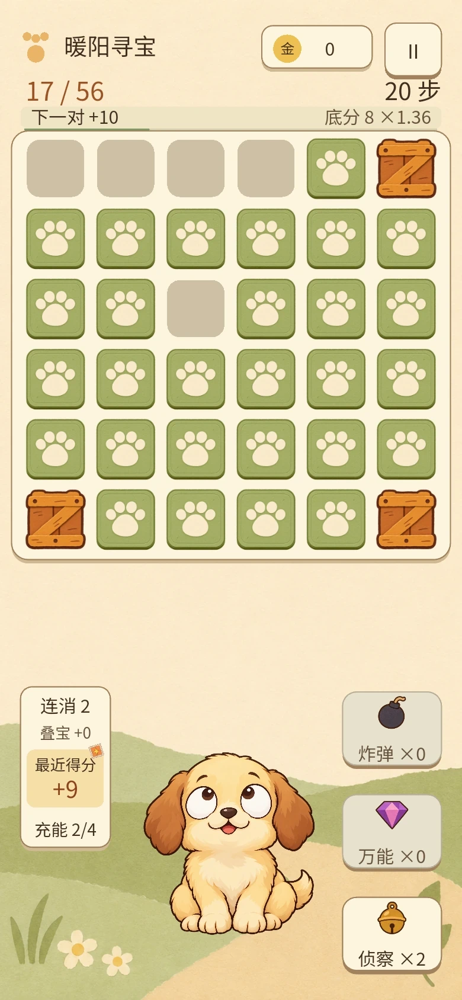

一张记住的牌，可能还被障碍挡着
开局用较少图案和更长的记忆时间熟悉配对。后续轮次抬高目标并加入木箱、冰块和迷雾，需要判断是先清障，还是先消掉记得最清楚的一对。


TAPTAP MAKER / 个人 AI 游戏实践
竖屏休闲益智 / 记忆配对 / 肉鸽寻宝
先偷看一眼牌面，再帮小狗翻出两张一样的图案。每闯过一轮，就选一件宝物叠上狗狗的头顶。带着这一摞宝继续走，还是现在回家？

Android 0.7.0 测试版本
开局先记牌，盖上后翻出相同图案得分。木箱、冰块和迷雾会改写配对顺序，步数也有限。每轮达标可从三件宝物里挑一件，再到营地补给、强化或结算回家。
首屏横图为项目宣传图。标注 Android 0.7.0 的画面来自 Android 15 模拟器实包验收，其余为各阶段 TapTap Maker 原生预览。
开局用较少图案和更长的记忆时间熟悉配对。后续轮次抬高目标并加入木箱、冰块和迷雾，需要判断是先清障，还是先消掉记得最清楚的一对。

选到的宝物会叠到小狗头上，直接显示当前这一趟的收获。棋盘和常用道具还在点击方便的位置，小狗和宝物留在棋盘下方。

到营地可以用当前金币买工具或强化宝物，再冲一轮更高目标。也可以带饼干回家，提高后续的步数或记忆时间。

切后台时盖好牌面、暂停计时，切回后让玩家确认继续。Android 0.7.0 在两种竖屏模拟器画幅验证了配对计分、切后台和重启后继续同一局。

点击图片可查看原图。 多张画面可左右滑动，也可聚焦图库后使用方向键浏览。





TAPTAP / 体验状态
暂无公开试玩入口。Android 0.7.0 为本地独立测试版本，TapTap Maker 0.7.0 为开发预览。